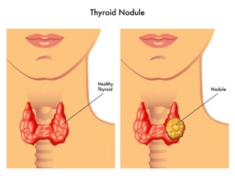

Thyroid nodules

SYMPTOMS:
- Trouble with swallowing or breathing
-
Hoarseness or voice change
-
Pain in the neck
-
Goiter (enlargement of the thyroid gland)
CAUSES
- Sometimes the thyroid begins to grow (overgrowth), causing one or more nodules to form. Why this happens is not known. Cancer is the biggest concern when nodules form. Fortunately, cancer is very rare – it is found in less than 5 percent of all nodules. Nodules develop more often in people who have a family history of nodules, and in people who don’t get enough iodine. Iodine is needed to make thyroid hormone
DIAGNOSIS
- Thyroid hormone level test: This blood test checks the levels of hormones secreted by the thyroid gland. The hormone levels are usually normal even if there are nodules. However, there are times when abnormal hormone levels are also benign. Therefore, your doctor will probably order other tests.
-
Thyroid ultrasound: This test uses sound waves to determine if a nodule is solid or a fluid-filled cyst. (The risk of cancer is higher in solid nodules.) This test also checks on the growth of nodules and helps find nodules that are difficult to feel. In addition, thyroid ultrasound is sometimes used to help guide placement of the needle during a fine needle biopsy.
-
Fine-needle biopsy of the thyroid gland: With this test, the doctor uses a very thin needle to take a sample of cells from one or more thyroid nodules. The samples are then sent to a laboratory, and most turn out to be noncancerous. However, if the test results are inconclusive, your doctor may repeat this test. The doctor may also suggest you have surgery to remove the nodules in order to make an accurate diagnosis.
-
Thyroid scan: In this test, a small amount of radioactive iodine is given orally. The doctor will check to see how much of the radioactive iodine is absorbed by the nodules and how much is absorbed by normal thyroid tissue. This will provide further information about thyroid nodules, helping the doctor determine the likelihood of cancer.
TREATMENT
- No treatment/"watchful waiting." If the nodules are not cancerous, you and your doctor may decide that you don’t need to be treated at this time. You will see your doctor on a regular basis so he or she can watch for any changes in the nodules.
-
Radioactive iodine. Your doctor may use radioactive iodine to treat hyperfunctioning thyroid nodules and goiters with several nodules. The radioactive iodine is absorbed into the thyroid gland, causing the nodules to shrink. Pregnant women and women trying to become pregnant should not have this treatment.
-
Surgery. Surgery to take out the nodules is the best treatment for nodules that are cancerous, cause "obstructive symptoms" (for example, are so large that they make breathing or swallowing difficult), and are “suspicious” (they cannot be diagnosed without being taken out and examined).